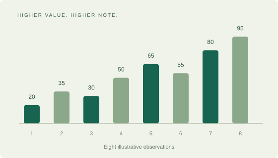

Responsible AI
Investigating understandable models, fairer datasets and the human decisions behind automated systems.
ETHICS + COMPUTINGASK SOMETHING THAT MATTERS
Discover how data can help us understand our communities. Then try a small experiment of your own.
Investigating understandable models, fairer datasets and the human decisions behind automated systems.
ETHICS + COMPUTINGExploring patterns in water use, changing weather and the local services that support everyday life.
ENVIRONMENT + DATAUnderstanding how students learn while keeping privacy and careful interpretation at the centre.
EDUCATION + INSIGHTTHE INTERACTIVE LEARNING LAB
Try k-means clustering: a simple way to group similar observations. Every point here is generated sample data.
The canvas visualises sample observations on two features. Enable JavaScript to run the experiment. A text summary and cluster table appear below.
Features X and Y are scaled from 0 to 100. Colours and point shapes both identify each group.
Each point joins the group with the nearest centroid, using Euclidean distance.
Each centroid moves to the mean position of the points assigned to its group.
The algorithm repeats until assignments stop changing or a safety limit is reached.
| Cluster | Points | Centroid X | Centroid Y |
|---|
The full 60-point sample is available below, with its current group assignment.
| Point | Feature X | Feature Y | Cluster |
|---|
ANOTHER WAY TO EXPLORE
These eight notes translate a sample sequence into sound. A larger value produces a higher pitch. This is a simple example of data sonification.
Eight soft notes play in order for sample values 20, 35, 30, 50, 65, 55, 80 and 95. The third and sixth notes dip; the final note is highest. There is no speech. Frequency in hertz equals 220 plus four times the value.
